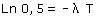
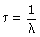

| N0 |
Cantidad de sustancia inicial (Átomos) |
| N |
Cantidad de sustancia que queda al cabo de un tiempo t (Átomos) |
| λ |
Constante de desintegración
Probabilidad de que, en un segundo, se desintegre uno de los átomos
(•)
|
Parámetros
relacionados con λ |
T |
Período de semidesintegración
Tiempo que tarda en desintegrarse la mitad de una cantidad cualquiera
 |
τ |
Vida media
Promedio de los tiempos que tardan en desintegrarse los átomos
 |